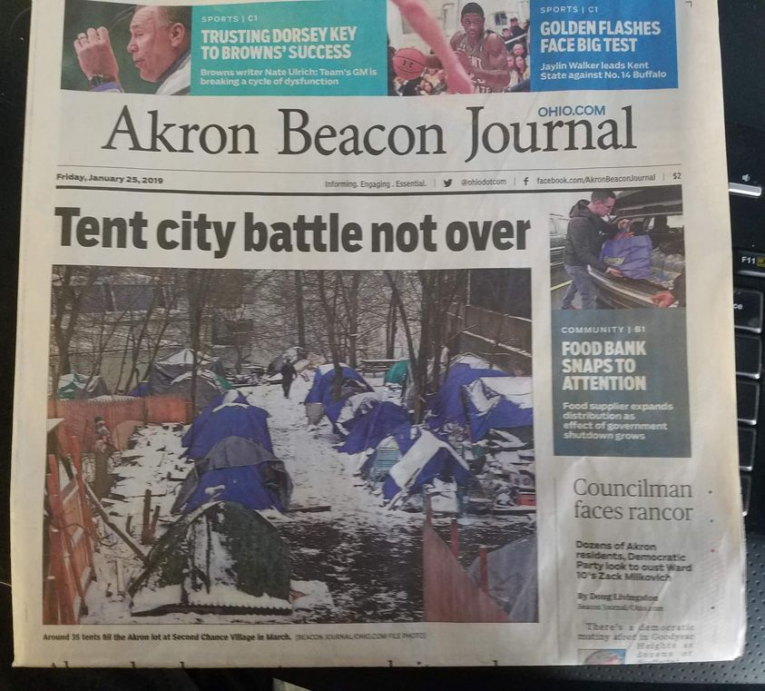

Mobile uploads
Here’s an article that was on the front page of the Akron Beacon Journal 5 years ago today.
That title is as true today as it was 5 years ago. “Tent city battle not over.”
I was so outraged and angry back then. I truly could not believe this was what society was like.
Aren’t we supposed to ask not what our country can do for us but what we can do for our country?
Aren’t we supposed to be a Christian nation and follow the teachings of Jesus?
Aren’t we supposed to fight for what we believe in?
I was so naive.
The answer to all those questions is much less idealistic. Much less values driven and much more money driven.
Money drives everything. If you aren’t producing enough money then you are RAPIDLY becoming a problem for society. Eventually, you become more valuable as a prisoner than a citizen.
And that’s where this story has sat for years. Don’t “enable” these people with cheap fabric tents from Walmart in the winter. Make them walk the streets 24/7 so they eventually slip up and land in jail. They make $40,000 a year for some rich white guy when they are in jail. No one is making any money off of them in a tent in Sage’s backyard. That’s un-American. 
That’s the cold hard truth I have deeply learned over all these years of work. (That and we will always hate some group of people because we are all bigots to some degree.)
I have also learned that how other people think and act is not my problem. My only focus is on how I think and act. That’s all I have any control over.
So, I just now sit over here posting these little stories about man’s inhumanity to man. I’m much more understanding of the deep failings of society than I used to be. We’ve always been cruel and ignorant and hateful. That’s baked deeply into the heart of every human.
Maybe these stories soften the hearts of a few readers. And maybe someday, someone in power will realize that forcing American citizens to live unsheltered and illegal to live in their own country, state, and city is wrong.
Place: Akron, Ohio (41.0732, -81.5179)
Address: Akron, OH 44301